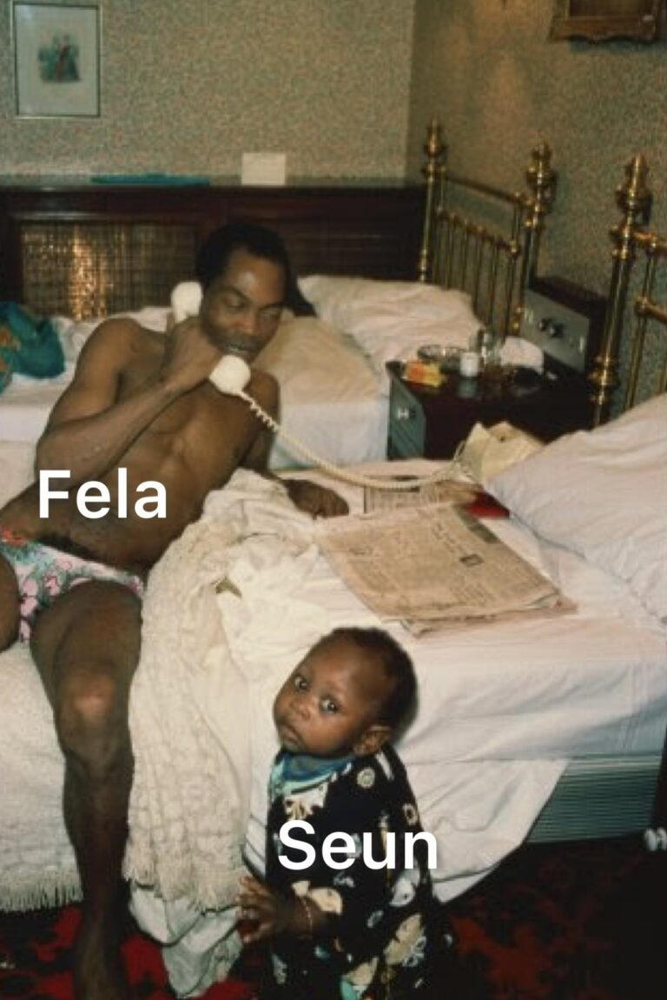

CODEG4 FORUM
NEWS OF NIGERIA
Seun Kuti Suffers PTSD From Family's Experience With Police - Reno (Throwback) - Politics -
Seun Kuti Suffers PTSD From Family's Experience With Police - Reno Omokri (Throwback Photo)
Former presidential aide, Reno Omokri has said that Afrobeat singer, Seun Kuti suffers from Post Traumatic Stress Disorder (PTSD), IGBERETV reports.
Reno has begged the Nigerian Inspector General Police to take Seun's PTSD into account while prosecuting him.
Seun was recently arrested and detained for slapping a police officer on duty. He is currently being prosecuted for the crime
Reno explained that Seun's father and Afrobeat legend, Fela Anikulapo Kuti and his family had a bad experience with the Nigerian police, which his son, Seun witnessed while growing up.
Reno shared a throwback picture of Fela Kuti together with his son, Seun. Reno wrote on Twitter;
"What Seun did was wrong. And I condemn it. But Seun has a history with the police and the military that has scarred him for life. They beat his Septuagenarian grandmother and threw her from the first floor to the ground. She died from the injuries sustained. His father carried her coffin to Dodan barracks in tears! Till today, NOBODY was punished for the crime against Olufunmilayo Kuti. They beat his father to an inch of his life. Multiple times. They burnt down their residence, with multiple vets and other property. They were never paid compensation. The police raided the shrine episodically, right from when Seun was a baby to his adulthood.
And even in this incident involving the slap, there was provocation from the policeman. I am not saying that the provocation justified the slap. My motive is just to put things in context.
What he did was condemnable. It is unacceptable. But when you look at his personal history, there are mitigating circumstances. And I beg the Inspector General of Police to take Seun's Post Traumatic Stress Disorder into account. Because even Buhari's wife, Aisha, admitted that her husband also suffers from PTSD due to his experience with the Nigerian state apparatus.
The police is as institutionally to blame for what happened to that policeman as Seun. Let us do story here and not just justice.
#TableShaker"
RENO TWITER POST
KUTI SUFFERS PTSD
